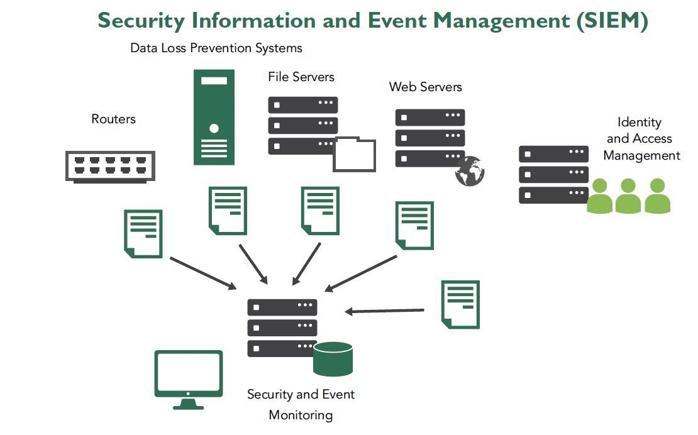

Supplier Security Requirements in the
Acquisition Process (8.4)
Supply chain risks can be introduced at any point in the supply
chain and may be inherited by each subsequent acquirer. Therefore, consideration of
supply chain risks should begin as early as possible in the acquisition life cycle.
As part of the onboarding process and during the life cycle of a contract, suppliers
are often required to show that they meet the required level of information security
for the services they provide.
Objectives
Identify security requirements and principles in software acquisition.
Elaborate critical considerations for software acquisition.
Overview
Security must be addressed in software acquisition processes,
and supply chain vendors must be categorized and evaluated based on their
criticality. Building a level of confidence in the security of acquired software may
require an audit of the third party’s secure SDLC policy and practices.
Vulnerability/incident notification and reporting, maintenance
and support structure, licensing and vendors’ security track records are
considerations during acquisitions.
Software Acquisition
When organizations acquire commercial off-the-shelf (COTS)
software, their primary considerations tend to be cost and features: Will this
software do what is needed, and is it affordable? Other attributes such as
scalability and performance may figure in the decision. Security is typically an
afterthought, and as a result many organizations purchase systems that are more
vulnerable than they should be.
This outcome can be avoided by making security a higher priority
in the decision-making process. Specifically, organizations should begin by
identifying their own security requirements and principles. This would enable them
to specify and prioritize security features among other attributes of the COTS
products they are considering. They should also have a process for incorporating
security engineering into the system as a COTS product is adopted and deployed in
the organization.
Security Controls in Software
Acquisition
Booz Allen Hamilton’s report, “Supply Chain Risk Management and
the Software Supply Chain,” states that security controls in software acquisitions
include purchasing only trustworthy software from trustworthy suppliers by:
Establishing sufficient basis for trusting suppliers and their products
Discovering and tracing pedigree and provenance of software products (including
their components from contractors or third parties)
Requiring assurance cases from software suppliers
Prior to acceptance—or, better yet, prior to acquisition:
Analyses should be taken to detect indicators of counterfeiting, piracy, and
license violations.
There should be an examination to detect malicious logic, backdoors, and
vulnerabilities.12
A typical enterprise may have hundreds or thousands of suppliers
and vendors. Some key suppliers or vendors are more important than others.
Organizational policies and controls should reflect this fact when performing
third-party security due diligence and ensuring compliance with the security policy.
Supplier Categorization
Categorizing, or ranking, a vendor or supplier on some sort of
scale is critical when appropriately managing the relationship with that vendor or
supplier. Strategic suppliers are deemed to be mission critical and cannot be easily
replaced if they become unavailable.
Although you will typically do business with only a few of these
types of partners, they are the most crucial. Commodity suppliers, on the other
hand, provide goods and services that can easily be replaced and sourced from a
variety of suppliers if necessary. Tactical suppliers supplement strategic and
commodity suppliers to manage emerging unforeseen issues and incidents. This figure
provides an example of various vendor categories in the supply chain.
Figure 5: Supply Chain Vendor Categories
Vendor Security Management
Policy
Organizational policies may contain security requirements for
vendors and suppliers. They may require audit of the security policy and the due
diligence to ensure compliance with the policy. This audit and due diligence may be
conducted in early stages of evaluating suppliers/vendors and subsequently on an
ongoing basis (e.g., annually) as part of the review and monitoring of third
parties.
Managing a successful audit has three main areas of focus:
Establishing a security baseline through annual audits
Spelling out your objectives
Choosing auditors with real security experience
It is important to understand the scope of the audit, as it may
be narrow or wide. The objectives of an audit must be clearly expressed and will
ultimately determine its scope. An audit may be focused on documented policies and
procedures, or it may include the direct testing of the security controls.
Organizations may measure their progress against the baselines established from
previous assessments and audits.
Examples of common and relevant audits include ISO 27001 audits;
SOC 2, Type 2 audits; and Payment Card Industry Data Security Standard (PCI DSS)
compliance audits. Assessments and audits are typically done at a regular frequency
(e.g., annually) and conducted by independent, qualified third parties.
Assessments and audits may be done in terms of snapshots (points
in time) or over a period of time. Regardless of the audit type, given that security
policies are foundational to every information security program, the audit of
security policies should be expected.
Software quality assurance audits are intended to improve the
quality of software and may include examination of code, processes, and test data.
Software compliance audits may be conducted to measure the degree of compliance with
mandates posed by regulations and standards. Software licensing audits may be
conducted as part of the asset management or risk management practices.
Secure Software Development
Practices
Secure software development practices are important, whether the
software is built in-house or acquired from vendors and suppliers. Building a level
of confidence in the security of acquired software may require an audit of the
vendor’s secure SDLC policy and practices.
Vulnerability and Incident
Notification, Response, Coordination, and Reporting
Organizations must ensure that acquired software is reliable,
resilient, recoverable, and relatively free from defects—either intentional or
accidental. Acquistions should seek assurance artifacts from suppliers regarding
vulnerability and incident management practices. An organization reviewing the
security practices of its vendors should look at vendor continuity planning,
including incident response plans, to ensure that notification and reporting
provisions meet the inheriting organization’s business requirements.
Security Information and Event
Management (SIEM)
Managing security operations involves the use of tools that
collect information about the IT environment from many disparate sources to better
examine the overall security of the organization and streamline security efforts.
These tools are generally known as SIEM solutions.
There is no formal industry standard that defines what a SIEM is
or the functions that they perform. SIEM is a marketing term, used by vendors to
label products and services that offer a range of capabilities for organizations
looking to integrate the many different sources of security-oriented information
throughout their systems. Many different products offer these services, or
similar-sounding sets of services, under a variety of names and acronyms such as
“SEM” or “SIM.” You will need to closely read the fine print to separate the SIEM
(or SEIM) required from the ones on offer in the marketplace.
As these shorter acronyms suggest, a security event manager
(SEM) provides real-time monitoring of events by correlating and analyzing data from
different security sensors in the system. Security information managers (SIMs)
provide long-term storage and management of such event data. SIMs were traditionally
used for nonreal time investigation and analysis, while SEMs were part of the
real-time incident detection and response process.
The general idea of a SIEM solution is to gather log data from
various sources across the enterprise to better understand potential security
concerns and apportion resources accordingly. Some common functions of SIEM
solutions include the following:
Aggregation. The SIEM tool gathers information from across the
environment. This offers a centralized repository of security data and allows
analysts to have a single interface with which to perform their duties. The SIEM
might gather log data from:
Firewalls
IDS/IPS systems
IT performance monitoring tools
Network devices (routers/switches/gateways)
Individual hosts/endpoints
Anti-malware solutions
Normalization. SIEM tools can often collect different types of
information from different types of sources and present the data in a
meaningful, standardized way, such that the analysis task is simplified;
analysts can use the SIEM tool instead of repeating various log review actions
on multiple systems.
Correlation. The SIEM may be able to mathematically assign weight and
probability to various activities throughout the enterprise as a means of
automatically calculating the probability that a given stream of log information
is an actual attack, whether the attack affects more than host/location/network,
and the likelihood and significance of input.
Secure storage. Because log data is enormously valuable (both to the
organization and to attackers) for many reasons and purposes, SIEM tools often
offer the ability to archive the material they contain in a secure manner.
Analysis. Some SIEM solutions perform automated analyses, using scripts
and heuristics.
Reporting. SIEM solutions often offer reporting tools for distilling
current and historical depictions of the activity in your environment.
Real-Time Monitoring. SIEM provides real-time monitoring and threat
detection across the organization’s infrastructure, which can enable rapid
responses to potential data breaches.
The figure below illustrates schematically how SIEM systems can
be used as part of an information security system. Operation and management of the
SIEM can be facilitated by internal IT and security or by an external third-party
provider.

Figure 6: Security Information and Event Management
(SIEM)
Maintenance and Support
Structure
The maintenance and support structure of a software vendor is
another consideration during acquisition. To maintain and support software, an
organization must identify proper channels and methods of receiving notifications
about newly available updates and end-of-maintenance announcements for elements
within the entire software stack.
Software Maintenance
Activities involved in software maintenance can generally be
grouped into four categories—corrective, adaptive, perfecting and preventive—based
on the objectives of these activities. Bug fixing and troubleshooting activities are
considered corrective, whereas modifying and updating the software to keep it
relevant are adaptive activities. Perfecting refers to maintenance activities
undertaken to keep the system functioning properly in the long term, and preventive
activities are intended to keep bugs and glitches from occurring in the future.
Community vs. Commercial
There are advantages to both open source and commercial software
models, each with its own strengths, challenges, and trade-offs. The models are not
exclusive and may coexist.
In the case of commercial software, the commercial entity often
provides support, training, updates and other similar services needed by customers.
With respect to open-source software, it should be noted that GNU General Public
License (GPL) is common, and according to the Business Software Alliance, “Charging
fees for system setup, system management, support, maintenance, and other related
services is permitted under the GPL. It is on this basis that commercial support
services for Linux—which is licensed under the GPL—are offered by companies and used
as one of their revenue sources.”13
Software can be sold (transfer of all control) or licensed
(transfer of permission). Licensing terms do not change intellectual property
rights; they are contractual terms.
Several types of software licenses exist, and penalties for
noncompliance can be harsh. Commercial, shareware, freeware, and creative commons
are examples of different types of licenses. Commercial software licensing typically
consists of a master agreement and an end-user license agreement (EULA). Whereas the
master agreement addresses the general terms, EULA addresses the specifics.
Common open-source license models include public domain,
permissive, and (also known as restrictive)
licenses.
Public domain software can be used and modified by anyone with no restrictions;
hence, it is the most permissive type of software license.
Permissive licenses have some minimal requirements with respect to modification
or redistribution. Apache style or BSD style are examples.
Copyleft licenses, also known as restrictive licenses, mean that any software
created or modified under that license must be distributed under the same
license terms. The license allows for redistribution, either for a fee or free
of charge, but cannot impose any constraints further than those already enforced
by the parent GLP license, such as a non-disclosure agreement or contract. The
only restriction on the use of the GLP license is that two licensees must use
different names for the license. The GNU General Public License (GNU GPL) is an
example.
Software Security License
Considerations
Software supply-chain considerations vary based on the license
type of software, such as commercial off-the-shelf (COTS), government off-the-shelf
(GOTS), and open-source software (OSS). Situations may vary even within the
above-mentioned licensing types. The example of OSS is detailed below.
OSS is software with the source code available to the public.
OSS has two main inferred licensing conditions: namely, permissive and copyleft.
Both have a similar cost structure with no cost associated with usage. A permissive
software license includes free use with minimal requirements dictating
redistribution. However, copyleft software license is also free use and
reproduction, but on the condition that the source code and derivative software
products remain publicly available. The small difference may have a large negative
impact on an organization that modifies copyleft OSS code and erroneously hopes to
keep the derivative product confidential. Alternatively, if a derivative copyleft
source is procured from a supplier, the source could potentially be requested.
Security Track Record
Although an organization cannot know everything about suppliers
and their products, it will need to know enough to measure the trustworthiness of a
supplier to make an informed risk decision. Organizations should review the security
track record of potential vendors.
To evaluate third-party providers, organizations may rely on
various methods including:
Proprietary and internally developed security due diligence questionnaires
Standardized assessment tools and reports (e.g., the Standardized Information
Gathering (SIG) questionnaire).
The use of other methods would depend on the nature of the
services provided by third parties.
Right to Audit
An audit can help an organization understand the capabilities
and policies of its supporting vendors. The right to audit is a key control that can
be included in a vendor contract.
Including a right-to-audit clause in a contract does not mean
the organization must perform an audit; it merely reserves the right to perform an
audit if needed.
Right to audit is not solely for high-risk relationships; a
low-risk proposition can quickly turn into a high-risk one as the nature of the
relationship changes and a vendor starts offering different types of services for
the organization.
Responsibility Models
Responsibility is an important consideration when establishing
or auditing a supply chain. Contractual obligations between acquisitions and
suppliers will determine responsibility for compliance and security. Contractual
agreements will also determine a supplier’s responsibility to provide security
artifacts such as SBOM documentation. Additionally, explicit contract language can
also empower an organization to audit suppliers for security compliance.
With most cloud providers, there is a concept of shared
responsibility. A shared model can lower the operational security burden for cloud
service providers (CSP) and customers. Security practitioners should carefully
review the cloud services selected by an organization to understand services, IT
integration, and compliance. In a shared responsibility model, security
practitioners need to understand the dividing line between vendor inherited
security, shared security, and customer security considerations.
Supplier Security Requirements in the Acquisition Process (8.4)
Supply chain risks can be introduced at any point in the supply chain and may be inherited by each subsequent acquirer. Therefore, consideration of supply chain risks should begin as early as possible in the acquisition life cycle. As part of the onboarding process and during the life cycle of a contract, suppliers are often required to show that they meet the required level of information security for the services they provide.
Objectives
Overview
Security must be addressed in software acquisition processes, and supply chain vendors must be categorized and evaluated based on their criticality. Building a level of confidence in the security of acquired software may require an audit of the third party’s secure SDLC policy and practices.
Vulnerability/incident notification and reporting, maintenance and support structure, licensing and vendors’ security track records are considerations during acquisitions.
Software Acquisition
When organizations acquire commercial off-the-shelf (COTS) software, their primary considerations tend to be cost and features: Will this software do what is needed, and is it affordable? Other attributes such as scalability and performance may figure in the decision. Security is typically an afterthought, and as a result many organizations purchase systems that are more vulnerable than they should be.
This outcome can be avoided by making security a higher priority in the decision-making process. Specifically, organizations should begin by identifying their own security requirements and principles. This would enable them to specify and prioritize security features among other attributes of the COTS products they are considering. They should also have a process for incorporating security engineering into the system as a COTS product is adopted and deployed in the organization.
Security Controls in Software Acquisition
Booz Allen Hamilton’s report, “Supply Chain Risk Management and the Software Supply Chain,” states that security controls in software acquisitions include purchasing only trustworthy software from trustworthy suppliers by:
Prior to acceptance—or, better yet, prior to acquisition:
12 Karen Mercedes Goertzel, CISSP; Booz Allen Hamilton, “Supply Chain Risk Management and the Software Supply Chain,” https://owasp.org/www-pdf-archive/BoozAllen-AppSecDC2010-sw_scrm.pdf ; Retrieved 2023.
Audit of Security Policy Compliance
A typical enterprise may have hundreds or thousands of suppliers and vendors. Some key suppliers or vendors are more important than others. Organizational policies and controls should reflect this fact when performing third-party security due diligence and ensuring compliance with the security policy.
Supplier Categorization
Categorizing, or ranking, a vendor or supplier on some sort of scale is critical when appropriately managing the relationship with that vendor or supplier. Strategic suppliers are deemed to be mission critical and cannot be easily replaced if they become unavailable.
Although you will typically do business with only a few of these types of partners, they are the most crucial. Commodity suppliers, on the other hand, provide goods and services that can easily be replaced and sourced from a variety of suppliers if necessary. Tactical suppliers supplement strategic and commodity suppliers to manage emerging unforeseen issues and incidents. This figure provides an example of various vendor categories in the supply chain.
Figure 5: Supply Chain Vendor Categories
Vendor Security Management Policy
Organizational policies may contain security requirements for vendors and suppliers. They may require audit of the security policy and the due diligence to ensure compliance with the policy. This audit and due diligence may be conducted in early stages of evaluating suppliers/vendors and subsequently on an ongoing basis (e.g., annually) as part of the review and monitoring of third parties.
Managing a successful audit has three main areas of focus:
It is important to understand the scope of the audit, as it may be narrow or wide. The objectives of an audit must be clearly expressed and will ultimately determine its scope. An audit may be focused on documented policies and procedures, or it may include the direct testing of the security controls. Organizations may measure their progress against the baselines established from previous assessments and audits.
Examples of common and relevant audits include ISO 27001 audits; SOC 2, Type 2 audits; and Payment Card Industry Data Security Standard (PCI DSS) compliance audits. Assessments and audits are typically done at a regular frequency (e.g., annually) and conducted by independent, qualified third parties.
Assessments and audits may be done in terms of snapshots (points in time) or over a period of time. Regardless of the audit type, given that security policies are foundational to every information security program, the audit of security policies should be expected.
Software quality assurance audits are intended to improve the quality of software and may include examination of code, processes, and test data. Software compliance audits may be conducted to measure the degree of compliance with mandates posed by regulations and standards. Software licensing audits may be conducted as part of the asset management or risk management practices.
Secure Software Development Practices
Secure software development practices are important, whether the software is built in-house or acquired from vendors and suppliers. Building a level of confidence in the security of acquired software may require an audit of the vendor’s secure SDLC policy and practices.
Vulnerability and Incident Notification, Response, Coordination, and Reporting
Organizations must ensure that acquired software is reliable, resilient, recoverable, and relatively free from defects—either intentional or accidental. Acquistions should seek assurance artifacts from suppliers regarding vulnerability and incident management practices. An organization reviewing the security practices of its vendors should look at vendor continuity planning, including incident response plans, to ensure that notification and reporting provisions meet the inheriting organization’s business requirements.
Security Information and Event Management (SIEM)
Managing security operations involves the use of tools that collect information about the IT environment from many disparate sources to better examine the overall security of the organization and streamline security efforts. These tools are generally known as SIEM solutions.
There is no formal industry standard that defines what a SIEM is or the functions that they perform. SIEM is a marketing term, used by vendors to label products and services that offer a range of capabilities for organizations looking to integrate the many different sources of security-oriented information throughout their systems. Many different products offer these services, or similar-sounding sets of services, under a variety of names and acronyms such as “SEM” or “SIM.” You will need to closely read the fine print to separate the SIEM (or SEIM) required from the ones on offer in the marketplace.
As these shorter acronyms suggest, a security event manager (SEM) provides real-time monitoring of events by correlating and analyzing data from different security sensors in the system. Security information managers (SIMs) provide long-term storage and management of such event data. SIMs were traditionally used for nonreal time investigation and analysis, while SEMs were part of the real-time incident detection and response process.
The general idea of a SIEM solution is to gather log data from various sources across the enterprise to better understand potential security concerns and apportion resources accordingly. Some common functions of SIEM solutions include the following:
The figure below illustrates schematically how SIEM systems can be used as part of an information security system. Operation and management of the SIEM can be facilitated by internal IT and security or by an external third-party provider.
Figure 6: Security Information and Event Management (SIEM)
Maintenance and Support Structure
The maintenance and support structure of a software vendor is another consideration during acquisition. To maintain and support software, an organization must identify proper channels and methods of receiving notifications about newly available updates and end-of-maintenance announcements for elements within the entire software stack.
Software Maintenance
Activities involved in software maintenance can generally be grouped into four categories—corrective, adaptive, perfecting and preventive—based on the objectives of these activities. Bug fixing and troubleshooting activities are considered corrective, whereas modifying and updating the software to keep it relevant are adaptive activities. Perfecting refers to maintenance activities undertaken to keep the system functioning properly in the long term, and preventive activities are intended to keep bugs and glitches from occurring in the future.
Community vs. Commercial
There are advantages to both open source and commercial software models, each with its own strengths, challenges, and trade-offs. The models are not exclusive and may coexist.
In the case of commercial software, the commercial entity often provides support, training, updates and other similar services needed by customers. With respect to open-source software, it should be noted that GNU General Public License (GPL) is common, and according to the Business Software Alliance, “Charging fees for system setup, system management, support, maintenance, and other related services is permitted under the GPL. It is on this basis that commercial support services for Linux—which is licensed under the GPL—are offered by companies and used as one of their revenue sources.”13
13 Business Software Alliance; Open Source and Commercial Software: An In-depth Analysis of the Issues; https://www.wipo.int/edocs/mdocs/copyright/en/wipo_ip_cm_07/wipo_ip_cm_07_www_82575.pdf; retrieved June 2023.
Licensing
Software can be sold (transfer of all control) or licensed (transfer of permission). Licensing terms do not change intellectual property rights; they are contractual terms.
Several types of software licenses exist, and penalties for noncompliance can be harsh. Commercial, shareware, freeware, and creative commons are examples of different types of licenses. Commercial software licensing typically consists of a master agreement and an end-user license agreement (EULA). Whereas the master agreement addresses the general terms, EULA addresses the specifics.
Common open-source license models include public domain, permissive, and (also known as restrictive) licenses.
Software Security License Considerations
Software supply-chain considerations vary based on the license type of software, such as commercial off-the-shelf (COTS), government off-the-shelf (GOTS), and open-source software (OSS). Situations may vary even within the above-mentioned licensing types. The example of OSS is detailed below.
OSS is software with the source code available to the public. OSS has two main inferred licensing conditions: namely, permissive and copyleft. Both have a similar cost structure with no cost associated with usage. A permissive software license includes free use with minimal requirements dictating redistribution. However, copyleft software license is also free use and reproduction, but on the condition that the source code and derivative software products remain publicly available. The small difference may have a large negative impact on an organization that modifies copyleft OSS code and erroneously hopes to keep the derivative product confidential. Alternatively, if a derivative copyleft source is procured from a supplier, the source could potentially be requested.
Security Track Record
Although an organization cannot know everything about suppliers and their products, it will need to know enough to measure the trustworthiness of a supplier to make an informed risk decision. Organizations should review the security track record of potential vendors.
To evaluate third-party providers, organizations may rely on various methods including:
The use of other methods would depend on the nature of the services provided by third parties.
Right to Audit
An audit can help an organization understand the capabilities and policies of its supporting vendors. The right to audit is a key control that can be included in a vendor contract.
Including a right-to-audit clause in a contract does not mean the organization must perform an audit; it merely reserves the right to perform an audit if needed.
Right to audit is not solely for high-risk relationships; a low-risk proposition can quickly turn into a high-risk one as the nature of the relationship changes and a vendor starts offering different types of services for the organization.
Responsibility Models
Responsibility is an important consideration when establishing or auditing a supply chain. Contractual obligations between acquisitions and suppliers will determine responsibility for compliance and security. Contractual agreements will also determine a supplier’s responsibility to provide security artifacts such as SBOM documentation. Additionally, explicit contract language can also empower an organization to audit suppliers for security compliance.
With most cloud providers, there is a concept of shared responsibility. A shared model can lower the operational security burden for cloud service providers (CSP) and customers. Security practitioners should carefully review the cloud services selected by an organization to understand services, IT integration, and compliance. In a shared responsibility model, security practitioners need to understand the dividing line between vendor inherited security, shared security, and customer security considerations.